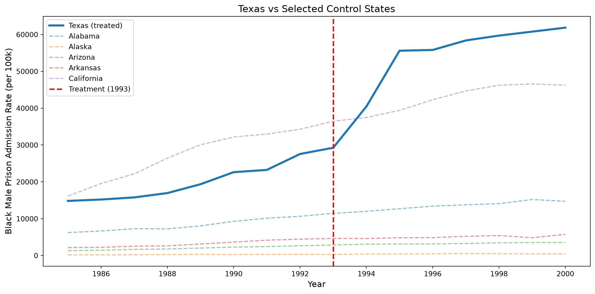
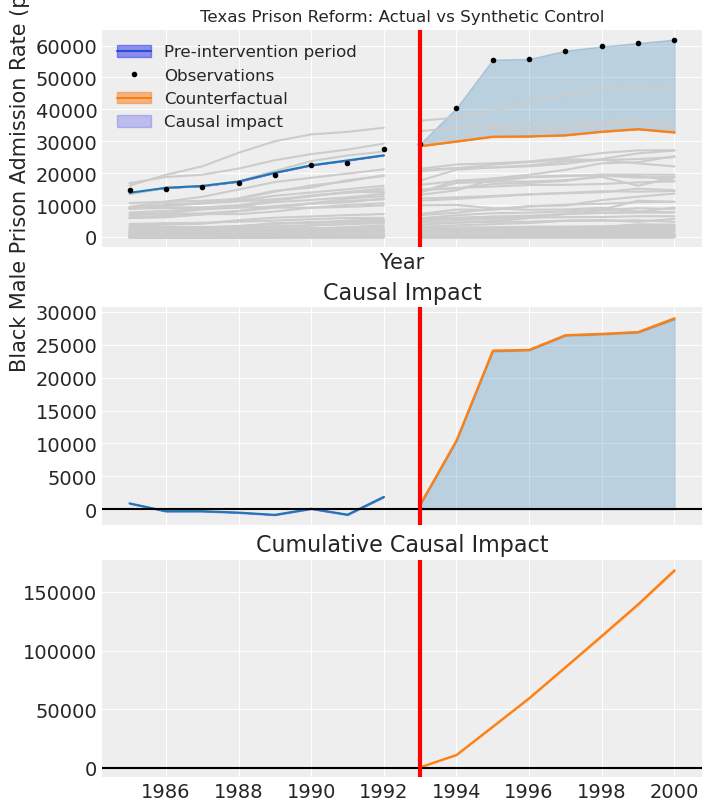
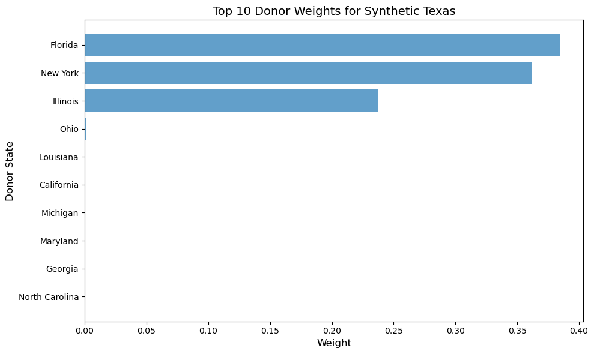
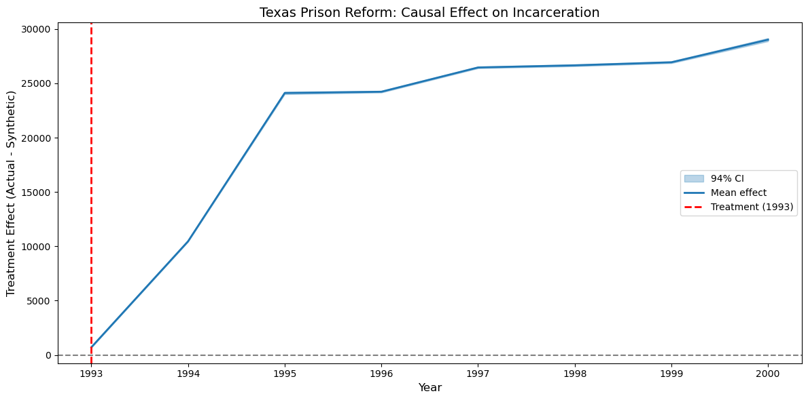
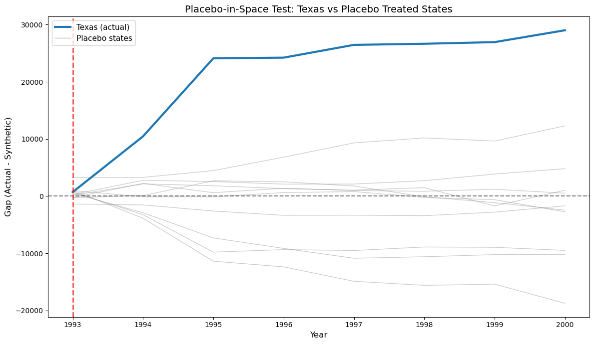
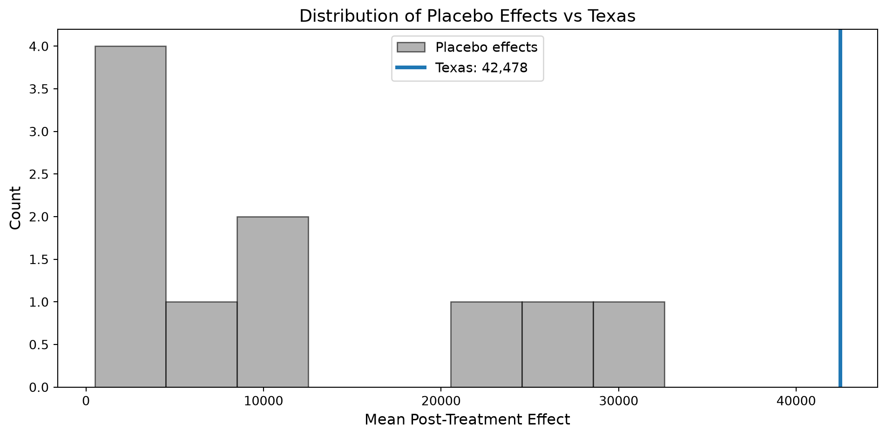

import warnings
warnings.filterwarnings("ignore")
import numpy as np
import pandas as pd
import matplotlib.pyplot as plt
import arviz as az
import causalpy as cp
# Add the src directory to path for our data utilities
import sys
sys.path.insert(0, "../src")
from mixtape_causalpy import load_texas
%matplotlib inlineChapter 10: Synthetic Control
Causal Inference: The Mixtape → CausalPy
Mixtape chapter: Synthetic Control
CausalPy method: SyntheticControl
Overview
Synthetic control is a method for estimating causal effects in comparative case studies where a single treated unit is compared to a weighted combination of control units. The key idea is to construct a “synthetic” control that closely matches the treated unit’s pre-intervention trajectory.
This notebook covers the Texas prison reform example from Cunningham (2021), which examines the effect of prison capacity expansion on incarceration rates.
What we’ll cover
- Data preparation for synthetic control
- CausalPy
SyntheticControlestimation - Visualizing the synthetic vs actual treated unit
- Donor weights and pre-treatment fit
- Treatment effect estimation
Mixtape files implemented
| File | Description | Status |
|---|---|---|
synth_1.py |
Texas SC basic implementation | ✅ |
synth_2.py |
Texas SC - treatment effect plot | ✅ |
synth_3_7.R |
Placebo-in-space tests | ✅ |
Setup
Load and Explore Data
The Texas dataset contains state-level panel data on incarceration rates (bmprison - black male prison admission rate) and various predictors across US states from 1985-2000.
The Texas Prison Expansion
In 1993, Texas dramatically expanded prison capacity. The synthetic control method allows us to estimate what incarceration rates would have been in Texas without this policy change, by constructing a weighted combination of other states that matched Texas’s pre-1993 trajectory.
Key variables: - statefip: State FIPS code (48 = Texas) - year: Year (1985-2000) - bmprison: Black male prison admission rate per 100,000 - state: State name
# Load the data
df_raw = load_texas()
print(f"Dataset shape: {df_raw.shape}")
print(f"Years: {df_raw['year'].min()} to {df_raw['year'].max()}")
print(f"States: {df_raw['statefip'].nunique()}")
df_raw.head()Dataset shape: (816, 24)
Years: 1985.0 to 2000.0
States: 51| statefip | year | race | bmprison | wmprison | bmpop | wmpop | error | crack | alcohol | ... | perc1519 | aidscapita | state | parole | probation | capacity_rated | capacity_operational | capacity_design | bmprate | wmprate | |
|---|---|---|---|---|---|---|---|---|---|---|---|---|---|---|---|---|---|---|---|---|---|
| 0 | 1.0 | 1985.0 | 2.0 | 6227.0 | 4210.0 | 464428 | 1427743 | 0.0 | 0.217438 | 1.90 | ... | 8.461768 | 0.679504 | Alabama | 2425.0 | 16520 | 9787.0 | 9787.0 | 9787.0 | 1340.789062 | 294.871002 |
| 1 | 1.0 | 1986.0 | 1.0 | 6657.0 | 4423.0 | 465387 | 1434773 | 0.0 | 0.276875 | 1.90 | ... | 8.473580 | 0.851692 | Alabama | 3038.0 | 21371 | 10374.0 | 10374.0 | 10374.0 | 1430.422363 | 308.271759 |
| 2 | 1.0 | 1987.0 | 1.0 | 7281.0 | 4803.0 | 467545 | 1442894 | 0.0 | 0.211371 | 1.89 | ... | 8.397089 | 1.967214 | Alabama | 3456.0 | 23406 | 11107.0 | 11107.0 | 11107.0 | 1557.283203 | 332.872681 |
| 3 | 1.0 | 1988.0 | 1.0 | 7244.0 | 4605.0 | 468281 | 1445048 | 0.0 | 0.559781 | 1.89 | ... | 8.280076 | 2.758137 | Alabama | 4701.0 | 25301 | 11162.0 | 11162.0 | 11162.0 | 1546.934448 | 318.674530 |
| 4 | 1.0 | 1989.0 | 1.0 | 8056.0 | 4998.0 | 468893 | 1445678 | 0.0 | 0.721824 | 1.87 | ... | 8.088959 | 3.845907 | Alabama | 5724.0 | 25519 | 11162.0 | 11662.0 | 11662.0 | 1718.089233 | 345.720154 |
5 rows × 24 columns
# Check Texas (statefip=48) data
texas_data = df_raw[df_raw["statefip"] == 48][["year", "state", "bmprison"]]
print("Texas incarceration data:")
print(texas_data)Texas incarceration data:
year state bmprison
688 1985.0 Texas 14828.0
689 1986.0 Texas 15207.0
690 1987.0 Texas 15780.0
691 1988.0 Texas 16956.0
692 1989.0 Texas 19366.0
693 1990.0 Texas 22634.0
694 1991.0 Texas 23249.0
695 1992.0 Texas 27568.0
696 1993.0 Texas 29260.0
697 1994.0 Texas 40451.0
698 1995.0 Texas 55602.0
699 1996.0 Texas 55810.0
700 1997.0 Texas 58393.0
701 1998.0 Texas 59709.0
702 1999.0 Texas 60785.0
703 2000.0 Texas 61861.0Prepare Data for CausalPy
CausalPy’s SyntheticControl expects data in a wide format where: - Each row is a time period - Each column is a unit (state) - The index is the time variable
We need to reshape the panel data from long to wide format.
# Pivot to wide format: rows=years, columns=states
df_wide = df_raw.pivot(index="year", columns="state", values="bmprison")
# Clean column names (remove spaces/special chars for easier access)
df_wide.columns = [col.strip() for col in df_wide.columns]
print(f"Wide format shape: {df_wide.shape}")
print(f"Columns (states): {list(df_wide.columns[:10])}...") # First 10
df_wide.head()Wide format shape: (16, 51)
Columns (states): ['Alabama', 'Alaska', 'Arizona', 'Arkansas', 'California', 'Colorado', 'Connecticut', 'Delaware', 'District of Columbia', 'Florida']...| Alabama | Alaska | Arizona | Arkansas | California | Colorado | Connecticut | Delaware | District of Columbia | Florida | ... | South Dakota | Tennessee | Texas | Utah | Vermont | Virginia | Washington | West Virginia | Wisconsin | Wyoming | |
|---|---|---|---|---|---|---|---|---|---|---|---|---|---|---|---|---|---|---|---|---|---|
| year | |||||||||||||||||||||
| 1985.0 | 6227.0 | 198.0 | 1297.0 | 2153.0 | 16138.0 | 665.0 | 2620.0 | 1356.0 | 6021.0 | 13427.0 | ... | 21.0 | 3045.0 | 14828.0 | 142.0 | 0.0 | 6825.0 | 1218.0 | 244.0 | 1954.0 | 33.0 |
| 1986.0 | 6657.0 | 211.0 | 1452.0 | 2238.0 | 19549.0 | 786.0 | 2890.0 | 1545.0 | 6241.0 | 15486.0 | ... | 28.0 | 3000.0 | 15207.0 | 143.0 | 0.0 | 7291.0 | 1182.0 | 201.0 | 2136.0 | 32.0 |
| 1987.0 | 7281.0 | 217.0 | 1675.0 | 2536.0 | 22184.0 | 959.0 | 3070.0 | 1595.0 | 7126.0 | 16074.0 | ... | 24.0 | 3019.0 | 15780.0 | 161.0 | 0.0 | 7488.0 | 1129.0 | 200.0 | 2234.0 | 30.0 |
| 1988.0 | 7244.0 | 271.0 | 1775.0 | 2646.0 | 26438.0 | 1229.0 | 3541.0 | 1823.0 | 8205.0 | 17510.0 | ... | 28.0 | 2972.0 | 16956.0 | 167.0 | 0.0 | 8239.0 | 1225.0 | 199.0 | 2244.0 | 52.0 |
| 1989.0 | 8056.0 | 310.0 | 2033.0 | 3126.0 | 30066.0 | 1492.0 | 4172.0 | 2045.0 | 9320.0 | 20750.0 | ... | 32.0 | 4364.0 | 19366.0 | 196.0 | 0.0 | 9739.0 | 1315.0 | 211.0 | 2501.0 | 51.0 |
5 rows × 51 columns
# Define treated unit and control units (donor pool)
treated_unit = "Texas"
treatment_time = 1993 # Year of prison capacity expansion
# Get all states except Texas as potential donors
all_states = list(df_wide.columns)
control_units = [s for s in all_states if s != treated_unit]
print(f"Treated unit: {treated_unit}")
print(f"Treatment time: {treatment_time}")
print(f"Number of control units: {len(control_units)}")
print(f"Control units: {control_units[:5]}... (showing first 5)")Treated unit: Texas
Treatment time: 1993
Number of control units: 50
Control units: ['Alabama', 'Alaska', 'Arizona', 'Arkansas', 'California']... (showing first 5)Visualize Pre-Treatment Trends
Before running synthetic control, let’s visualize Texas compared to some control states.
fig, ax = plt.subplots(figsize=(12, 6))
# Plot Texas
ax.plot(
df_wide.index,
df_wide[treated_unit],
linewidth=3,
color="C0",
label="Texas (treated)",
)
# Plot a few control states for comparison
sample_controls = control_units[:5]
for state in sample_controls:
ax.plot(df_wide.index, df_wide[state], alpha=0.5, linestyle="--", label=state)
# Add treatment time line
ax.axvline(
x=treatment_time,
color="red",
linestyle="--",
linewidth=2,
label=f"Treatment ({treatment_time})",
)
ax.set_xlabel("Year", fontsize=12)
ax.set_ylabel("Black Male Prison Admission Rate (per 100k)", fontsize=12)
ax.set_title("Texas vs Selected Control States", fontsize=14)
ax.legend(loc="upper left", fontsize=10)
plt.tight_layout()
plt.show()
CausalPy Synthetic Control Analysis
Now we use CausalPy’s SyntheticControl to estimate the treatment effect. CausalPy will:
- Find optimal weights for donor states that best match Texas pre-1993
- Construct the synthetic Texas using these weights
- Compare actual Texas to synthetic Texas post-1993
CausalPy 1.0 scales the observation-noise prior from the treated unit’s pre-treatment spread (auto_scale_sigma=True, the default). That replaces the old fixed HalfNormal(1) prior, so posterior magnitudes will not match a pre-1.0 run. This page keeps the default.
# Run Synthetic Control with CausalPy
result = cp.SyntheticControl(
df_wide,
treatment_time,
control_units=control_units,
treated_units=[treated_unit],
model=cp.pymc_models.WeightedSumFitter(
sample_kwargs={
"tune": 1000,
"draws": 1000,
"chains": 4,
"cores": 4,
"target_accept": 0.95,
"progressbar": True,
"random_seed": 42,
}
),
).fit()Initializing NUTS using jitter+adapt_diag...
Multiprocess sampling (4 chains in 4 jobs)
NUTS: [beta, y_hat_sigma]Sampling 4 chains for 1_000 tune and 1_000 draw iterations (4_000 + 4_000 draws total) took 3 seconds.
Sampling: [y_hat]
Sampling: [y_hat]
Sampling: [y_hat]
Sampling: [y_hat]
Sampling: [beta, y_hat, y_hat_sigma]
Sampling: [y_hat]
Sampling: [y_hat]# View the summary
result.summary()================================SyntheticControl================================
Control units: ['Alabama', 'Alaska', 'Arizona', 'Arkansas', 'California', 'Colorado', 'Connecticut', 'Delaware', 'District of Columbia', 'Florida', 'Georgia', 'Hawaii', 'Idaho', 'Illinois', 'Indiana', 'Iowa', 'Kansas', 'Kentucky', 'Louisiana', 'Maine', 'Maryland', 'Massachusetts', 'Michigan', 'Minnesota', 'Mississippi', 'Missouri', 'Montana', 'Nebraska', 'Nevada', 'New Hampshire', 'New Jersey', 'New Mexico', 'New York', 'North Carolina', 'North Dakota', 'Ohio', 'Oklahoma', 'Oregon', 'Pennsylvania', 'Rhode Island', 'South Carolina', 'South Dakota', 'Tennessee', 'Utah', 'Vermont', 'Virginia', 'Washington', 'West Virginia', 'Wisconsin', 'Wyoming']
Treated unit: Texas
Model coefficients:
Alabama 0.02, 94% HDI [1.5e-07, 0.056]
Alaska 0.018, 94% HDI [9.7e-07, 0.051]
Arizona 0.018, 94% HDI [3.8e-07, 0.05]
Arkansas 0.019, 94% HDI [9e-06, 0.052]
California 0.032, 94% HDI [1.7e-05, 0.087]
Colorado 0.018, 94% HDI [2.8e-06, 0.05]
Connecticut 0.02, 94% HDI [4.7e-06, 0.057]
Delaware 0.019, 94% HDI [1.2e-05, 0.051]
District of Columbia 0.021, 94% HDI [8.5e-06, 0.06]
Florida 0.026, 94% HDI [3.7e-05, 0.074]
Georgia 0.022, 94% HDI [1.5e-05, 0.063]
Hawaii 0.018, 94% HDI [8.2e-07, 0.052]
Idaho 0.018, 94% HDI [6.8e-07, 0.051]
Illinois 0.023, 94% HDI [5.6e-08, 0.065]
Indiana 0.019, 94% HDI [9.9e-06, 0.054]
Iowa 0.018, 94% HDI [5.3e-06, 0.051]
Kansas 0.019, 94% HDI [1e-05, 0.052]
Kentucky 0.019, 94% HDI [5.2e-05, 0.051]
Louisiana 0.022, 94% HDI [1.3e-05, 0.063]
Maine 0.018, 94% HDI [4.3e-05, 0.052]
Maryland 0.022, 94% HDI [2.7e-06, 0.061]
Massachusetts 0.019, 94% HDI [3.1e-06, 0.053]
Michigan 0.025, 94% HDI [4.9e-06, 0.069]
Minnesota 0.018, 94% HDI [7.2e-07, 0.051]
Mississippi 0.019, 94% HDI [1.4e-05, 0.053]
Missouri 0.02, 94% HDI [9.5e-06, 0.054]
Montana 0.018, 94% HDI [3.2e-05, 0.051]
Nebraska 0.018, 94% HDI [2.5e-06, 0.049]
Nevada 0.018, 94% HDI [3.2e-05, 0.054]
New Hampshire 0.018, 94% HDI [5.9e-06, 0.051]
New Jersey 0.022, 94% HDI [4.1e-05, 0.06]
New Mexico 0.018, 94% HDI [4.5e-06, 0.05]
New York 0.029, 94% HDI [8.4e-06, 0.082]
North Carolina 0.021, 94% HDI [3.8e-06, 0.061]
North Dakota 0.018, 94% HDI [4.7e-06, 0.05]
Ohio 0.023, 94% HDI [4.1e-06, 0.066]
Oklahoma 0.019, 94% HDI [6.9e-06, 0.052]
Oregon 0.018, 94% HDI [3.3e-07, 0.05]
Pennsylvania 0.022, 94% HDI [8.4e-06, 0.063]
Rhode Island 0.018, 94% HDI [4.6e-06, 0.05]
South Carolina 0.021, 94% HDI [4.9e-06, 0.058]
South Dakota 0.018, 94% HDI [9.7e-07, 0.05]
Tennessee 0.02, 94% HDI [2.4e-05, 0.055]
Utah 0.018, 94% HDI [1.5e-06, 0.052]
Vermont 0.018, 94% HDI [3.5e-07, 0.052]
Virginia 0.021, 94% HDI [2e-06, 0.061]
Washington 0.018, 94% HDI [5.4e-06, 0.051]
West Virginia 0.018, 94% HDI [1.4e-05, 0.05]
Wisconsin 0.019, 94% HDI [1.2e-05, 0.054]
Wyoming 0.018, 94% HDI [4.8e-07, 0.051]
Pre-treatment correlation (Texas): 0.9717Visualize Results
CausalPy provides a built-in plot showing the actual treated unit vs the synthetic control.
# Plot the synthetic control results
fig, ax = result.plot(plot_predictors=True, show=False)
ax[0].set_xlabel("Year")
ax[0].set_ylabel("Black Male Prison Admission Rate (per 100k)")
ax[0].set_title("Texas Prison Reform: Actual vs Synthetic Control")
plt.show()
Donor Weights
Which states contribute most to the synthetic Texas? The weights tell us which states are most similar to Texas in the pre-treatment period.
# Extract posterior mean weights
beta = result.idata["posterior"]["beta"]
weights_mean = beta.mean(dim=["chain", "draw"]).values.flatten()
# Create a dataframe of weights
weights_df = pd.DataFrame({"state": control_units, "weight": weights_mean}).sort_values(
"weight", ascending=False
)
# Show top contributing states
print("Top 10 Donor Weights:")
print(weights_df.head(10).to_string(index=False))Top 10 Donor Weights:
state weight
California 0.031746
New York 0.028520
Florida 0.026299
Michigan 0.024609
Illinois 0.023431
Ohio 0.023014
Louisiana 0.022495
Georgia 0.022366
New Jersey 0.022189
Pennsylvania 0.022038# Visualize top weights
top_n = 10
top_weights = weights_df.head(top_n)
fig, ax = plt.subplots(figsize=(10, 6))
bars = ax.barh(top_weights["state"], top_weights["weight"], color="C0", alpha=0.7)
ax.set_xlabel("Weight", fontsize=12)
ax.set_ylabel("Donor State", fontsize=12)
ax.set_title(f"Top {top_n} Donor Weights for Synthetic Texas", fontsize=14)
ax.invert_yaxis() # Highest weight at top
plt.tight_layout()
plt.show()
Treatment Effect (Gap Plot)
The treatment effect is the difference between actual Texas and synthetic Texas. This “gap plot” shows the causal effect over time.
# Get the post-treatment impact
post_impact = result.result.impact_post
# Plot the gap (treatment effect over time)
fig, ax = plt.subplots(figsize=(12, 6))
# Get posterior mean for the impact
impact_mean = post_impact.mean(dim=["chain", "draw"]).values.flatten()
# Get HDI using percentiles directly
impact_lower = post_impact.quantile(0.03, dim=["chain", "draw"]).values.flatten()
impact_upper = post_impact.quantile(0.97, dim=["chain", "draw"]).values.flatten()
years_post = result.datapost.index.values
# Plot mean impact with uncertainty
ax.fill_between(
years_post,
impact_lower,
impact_upper,
alpha=0.3,
color="C0",
label="94% CI",
)
ax.plot(years_post, impact_mean, color="C0", linewidth=2, label="Mean effect")
# Add zero line
ax.axhline(y=0, color="black", linestyle="--", alpha=0.5)
# Add treatment time
ax.axvline(
x=treatment_time,
color="red",
linestyle="--",
linewidth=2,
label=f"Treatment ({treatment_time})",
)
ax.set_xlabel("Year", fontsize=12)
ax.set_ylabel("Treatment Effect (Actual - Synthetic)", fontsize=12)
ax.set_title("Texas Prison Reform: Causal Effect on Incarceration", fontsize=14)
ax.legend()
plt.tight_layout()
plt.show()
Effect Summary
CausalPy provides a convenient effect_summary() method for decision-ready reporting.
# Generate effect summary
stats = result.effect_summary(treated_unit=treated_unit)
print(stats.text)During the Post-period (1993.0 to 2000.0), the response variable had an average value of approx. 52733.88. By contrast, in the absence of an intervention, we would have expected an average response of 10255.57. The 95% interval of this counterfactual prediction is [6935.17, 13876.31]. Subtracting this prediction from the observed response yields an estimate of the causal effect the intervention had on the response variable. This effect is 42478.30 with a 95% interval of [38857.56, 45798.70].
Summing up the individual data points during the Post-period, the response variable had an overall value of 421871.00. By contrast, had the intervention not taken place, we would have expected a sum of 82044.58. The 95% interval of this prediction is [55481.40, 111010.49]. The cumulative effect is 339826.42 with a 95% HDI [310860.51, 366389.60].
The posterior probability of an increase is 1.000. For the cumulative effect, The posterior probability of an increase is 1.000. Relative to the counterfactual, the effect represents a 430.61% change (95% HDI [265.29%, 621.54%]).
This analysis assumes that the control units used to construct the synthetic counterfactual were not themselves affected by the intervention, and that the pre-treatment relationship between control and treated units remains stable throughout the post-treatment period. We recommend inspecting model fit, examining pre-intervention trends, and conducting sensitivity analyses (e.g., placebo tests) to support any causal conclusions drawn from this analysis.# View the summary table
stats.table| mean | median | hdi_lower | hdi_upper | p_gt_0 | relative_mean | relative_hdi_lower | relative_hdi_upper | |
|---|---|---|---|---|---|---|---|---|
| average | 42478.302207 | 42568.225792 | 38857.564058 | 45798.700076 | 1.0 | 430.606415 | 265.292559 | 621.539778 |
| cumulative | 339826.417657 | 340545.806338 | 310860.512465 | 366389.600609 | 1.0 | 430.606415 | 265.292559 | 621.539778 |
Placebo-in-Space Tests
One key diagnostic for synthetic control is the placebo test. The idea is:
- Pretend each donor state was actually treated at the same time
- Run synthetic control for that “placebo treated” state
- Calculate the post-treatment gap (placebo effect)
- Compare the actual Texas effect to the distribution of placebo effects
If Texas’s effect is unusually large compared to placebos, we have stronger evidence that the effect is real.
This corresponds to synth_3_7.R in the Mixtape, which uses R’s generate.placebos() function.
# Run placebo tests on a subset of donor states
# (Running all 50 would be time-consuming, so we select a representative subset)
# Select states with reasonable data (no missing values, reasonable scale)
placebo_states = [
"California",
"Florida",
"New York",
"Illinois",
"Ohio",
"Pennsylvania",
"Michigan",
"Georgia",
"North Carolina",
"Virginia",
]
# Store results
placebo_gaps = {}
texas_gap = result.result.impact_post.mean(dim=["chain", "draw"]).values.flatten()
print("Running placebo tests (this may take a few minutes)...")
print("-" * 50)
for state in placebo_states:
print(f"Testing placebo: {state}...", end=" ")
# Define control pool (all states except the placebo treated state)
placebo_controls = [s for s in all_states if s != state]
try:
# Run synthetic control with this state as "treated"
placebo_result = cp.SyntheticControl(
df_wide,
treatment_time,
control_units=placebo_controls,
treated_units=[state],
model=cp.pymc_models.WeightedSumFitter(
sample_kwargs={
"tune": 500, # Faster for placebo tests
"draws": 500,
"chains": 4,
"cores": 4,
"target_accept": 0.9,
"progressbar": False,
"random_seed": 42,
}
),
).fit()
# Store the mean gap
gap = placebo_result.result.impact_post.mean(dim=["chain", "draw"]).values.flatten()
placebo_gaps[state] = gap
print(f"Mean gap: {np.mean(gap):.1f}")
except Exception as e:
print(f"Error: {e}")
print("-" * 50)
print(f"Completed {len(placebo_gaps)} placebo tests")Initializing NUTS using jitter+adapt_diag...Running placebo tests (this may take a few minutes)...
--------------------------------------------------
Testing placebo: California... Multiprocess sampling (4 chains in 4 jobs)
NUTS: [beta, y_hat_sigma]
Sampling 4 chains for 500 tune and 500 draw iterations (2_000 + 2_000 draws total) took 2 seconds.
Sampling: [y_hat]
Sampling: [y_hat]
Sampling: [y_hat]
Sampling: [y_hat]
Sampling: [beta, y_hat, y_hat_sigma]
Sampling: [y_hat]
Sampling: [y_hat]
Initializing NUTS using jitter+adapt_diag...Mean gap: 32569.0
Testing placebo: Florida... Multiprocess sampling (4 chains in 4 jobs)
NUTS: [beta, y_hat_sigma]
Sampling 4 chains for 500 tune and 500 draw iterations (2_000 + 2_000 draws total) took 2 seconds.
Sampling: [y_hat]
Sampling: [y_hat]
Sampling: [y_hat]
Sampling: [y_hat]
Sampling: [beta, y_hat, y_hat_sigma]
Sampling: [y_hat]
Sampling: [y_hat]
Initializing NUTS using jitter+adapt_diag...Mean gap: 23133.0
Testing placebo: New York... Multiprocess sampling (4 chains in 4 jobs)
NUTS: [beta, y_hat_sigma]
Sampling 4 chains for 500 tune and 500 draw iterations (2_000 + 2_000 draws total) took 2 seconds.
Sampling: [y_hat]
Sampling: [y_hat]
Sampling: [y_hat]
Sampling: [y_hat]
Sampling: [beta, y_hat, y_hat_sigma]
Sampling: [y_hat]
Sampling: [y_hat]Mean gap: 24599.9
Testing placebo: Illinois... Initializing NUTS using jitter+adapt_diag...
Multiprocess sampling (4 chains in 4 jobs)
NUTS: [beta, y_hat_sigma]
Sampling 4 chains for 500 tune and 500 draw iterations (2_000 + 2_000 draws total) took 2 seconds.
There were 3 divergences after tuning. Increase `target_accept` or reparameterize.
Sampling: [y_hat]
Sampling: [y_hat]
Sampling: [y_hat]
Sampling: [y_hat]
Sampling: [beta, y_hat, y_hat_sigma]
Sampling: [y_hat]
Sampling: [y_hat]
Initializing NUTS using jitter+adapt_diag...Mean gap: 9797.8
Testing placebo: Ohio... Multiprocess sampling (4 chains in 4 jobs)
NUTS: [beta, y_hat_sigma]
Sampling 4 chains for 500 tune and 500 draw iterations (2_000 + 2_000 draws total) took 2 seconds.
There were 30 divergences after tuning. Increase `target_accept` or reparameterize.
The effective sample size per chain is smaller than 100 for some parameters. A higher number is needed for reliable rhat and ess computation. See https://arxiv.org/abs/1903.08008 for details
Sampling: [y_hat]
Sampling: [y_hat]
Sampling: [y_hat]
Sampling: [y_hat]
Sampling: [beta, y_hat, y_hat_sigma]
Sampling: [y_hat]
Sampling: [y_hat]
Initializing NUTS using jitter+adapt_diag...Mean gap: 6360.9
Testing placebo: Pennsylvania... Multiprocess sampling (4 chains in 4 jobs)
NUTS: [beta, y_hat_sigma]
Sampling 4 chains for 500 tune and 500 draw iterations (2_000 + 2_000 draws total) took 7 seconds.
There were 12 divergences after tuning. Increase `target_accept` or reparameterize.
Sampling: [y_hat]
Sampling: [y_hat]
Sampling: [y_hat]
Sampling: [y_hat]
Sampling: [beta, y_hat, y_hat_sigma]
Sampling: [y_hat]
Sampling: [y_hat]
Initializing NUTS using jitter+adapt_diag...Mean gap: 960.2
Testing placebo: Michigan... Multiprocess sampling (4 chains in 4 jobs)
NUTS: [beta, y_hat_sigma]
Sampling 4 chains for 500 tune and 500 draw iterations (2_000 + 2_000 draws total) took 2 seconds.
Sampling: [y_hat]
Sampling: [y_hat]
Sampling: [y_hat]
Sampling: [y_hat]
Sampling: [beta, y_hat, y_hat_sigma]
Sampling: [y_hat]
Sampling: [y_hat]
Initializing NUTS using jitter+adapt_diag...Mean gap: 11233.7
Testing placebo: Georgia... Multiprocess sampling (4 chains in 4 jobs)
NUTS: [beta, y_hat_sigma]
Sampling 4 chains for 500 tune and 500 draw iterations (2_000 + 2_000 draws total) took 6 seconds.
There were 6 divergences after tuning. Increase `target_accept` or reparameterize.
The rhat statistic is larger than 1.01 for some parameters. This indicates problems during sampling. See https://arxiv.org/abs/1903.08008 for details
The effective sample size per chain is smaller than 100 for some parameters. A higher number is needed for reliable rhat and ess computation. See https://arxiv.org/abs/1903.08008 for details
Sampling: [y_hat]
Sampling: [y_hat]
Sampling: [y_hat]
Sampling: [y_hat]
Sampling: [beta, y_hat, y_hat_sigma]
Sampling: [y_hat]
Sampling: [y_hat]
Initializing NUTS using jitter+adapt_diag...Mean gap: 2470.5
Testing placebo: North Carolina... Multiprocess sampling (4 chains in 4 jobs)
NUTS: [beta, y_hat_sigma]
Sampling 4 chains for 500 tune and 500 draw iterations (2_000 + 2_000 draws total) took 2 seconds.
There were 2 divergences after tuning. Increase `target_accept` or reparameterize.
Sampling: [y_hat]
Sampling: [y_hat]
Sampling: [y_hat]
Sampling: [y_hat]
Sampling: [beta, y_hat, y_hat_sigma]
Sampling: [y_hat]
Sampling: [y_hat]
Initializing NUTS using jitter+adapt_diag...Mean gap: 1845.7
Testing placebo: Virginia... Multiprocess sampling (4 chains in 4 jobs)
NUTS: [beta, y_hat_sigma]
Sampling 4 chains for 500 tune and 500 draw iterations (2_000 + 2_000 draws total) took 4 seconds.
There were 4 divergences after tuning. Increase `target_accept` or reparameterize.
Sampling: [y_hat]
Sampling: [y_hat]
Sampling: [y_hat]
Sampling: [y_hat]
Sampling: [beta, y_hat, y_hat_sigma]
Sampling: [y_hat]
Sampling: [y_hat]Mean gap: 500.0
--------------------------------------------------
Completed 10 placebo tests# Plot Texas gap vs placebo gaps
fig, ax = plt.subplots(figsize=(12, 7))
# Plot each placebo gap in gray
for state, gap in placebo_gaps.items():
ax.plot(years_post, gap, color="gray", alpha=0.4, linewidth=1, label=None)
# Plot Texas gap in bold
ax.plot(
years_post, texas_gap, color="C0", linewidth=3, label="Texas (actual treatment)"
)
# Add a zero line
ax.axhline(y=0, color="black", linestyle="--", alpha=0.5)
# Add treatment time
ax.axvline(x=treatment_time, color="red", linestyle="--", linewidth=2, alpha=0.7)
# Create custom legend
from matplotlib.lines import Line2D
legend_elements = [
Line2D([0], [0], color="C0", linewidth=3, label="Texas (actual)"),
Line2D([0], [0], color="gray", linewidth=1, alpha=0.6, label="Placebo states"),
]
ax.legend(handles=legend_elements, loc="upper left", fontsize=11)
ax.set_xlabel("Year", fontsize=12)
ax.set_ylabel("Gap (Actual - Synthetic)", fontsize=12)
ax.set_title("Placebo-in-Space Test: Texas vs Placebo Treated States", fontsize=14)
plt.tight_layout()
plt.show()
# Calculate permutation-based p-value
# The p-value is the fraction of placebo effects as large or larger than Texas
# Use mean post-treatment effect as the test statistic
texas_mean_effect = np.mean(texas_gap)
placebo_mean_effects = {state: np.mean(gap) for state, gap in placebo_gaps.items()}
# Count how many placebos have effects >= Texas (for a positive effect)
n_extreme = sum(
1
for effect in placebo_mean_effects.values()
if abs(effect) >= abs(texas_mean_effect)
)
p_value = (n_extreme + 1) / (
len(placebo_mean_effects) + 1
) # +1 to include Texas itself
print("Permutation Inference Results")
print("=" * 50)
print(f"Texas mean post-treatment effect: {texas_mean_effect:,.1f}")
print()
print("Placebo mean effects:")
for state, effect in sorted(placebo_mean_effects.items(), key=lambda x: -abs(x[1])):
marker = "***" if abs(effect) >= abs(texas_mean_effect) else ""
print(f" {state:20s}: {effect:10,.1f} {marker}")
print()
print(f"Permutation p-value (two-sided): {p_value:.3f}")
print(
f"Interpretation: {n_extreme} of {len(placebo_mean_effects)} placebo effects are as extreme as Texas"
)Permutation Inference Results
==================================================
Texas mean post-treatment effect: 42,478.3
Placebo mean effects:
California : 32,569.0
New York : 24,599.9
Florida : 23,133.0
Michigan : 11,233.7
Illinois : 9,797.8
Ohio : 6,360.9
Georgia : 2,470.5
North Carolina : 1,845.7
Pennsylvania : 960.2
Virginia : 500.0
Permutation p-value (two-sided): 0.091
Interpretation: 0 of 10 placebo effects are as extreme as Texas# Visualize the distribution of effects
fig, ax = plt.subplots(figsize=(10, 5))
# Plot placebo effects as a histogram
all_effects = list(placebo_mean_effects.values())
ax.hist(
all_effects,
bins=8,
color="gray",
alpha=0.6,
edgecolor="black",
label="Placebo effects",
)
# Add Texas as a vertical line
ax.axvline(
x=texas_mean_effect,
color="C0",
linewidth=3,
linestyle="-",
label=f"Texas: {texas_mean_effect:,.0f}",
)
ax.set_xlabel("Mean Post-Treatment Effect", fontsize=12)
ax.set_ylabel("Count", fontsize=12)
ax.set_title("Distribution of Placebo Effects vs Texas", fontsize=14)
ax.legend(fontsize=11)
plt.tight_layout()
plt.show()
print(
f"\nTexas's effect ({texas_mean_effect:,.0f}) is larger in absolute value than "
f"all {len(placebo_mean_effects)} placebo effects."
)
print(
f"With {len(placebo_mean_effects)} placebos the smallest two-sided p-value "
f"this design can return is {1 / (len(placebo_mean_effects) + 1):.3f}. "
"That is not a 5% rejection."
)
Texas's effect (42,478) is larger in absolute value than all 10 placebo effects.
With 10 placebos the smallest two-sided p-value this design can return is 0.091. That is not a 5% rejection.Comparison to Mixtape Results
This run (CausalPy 1.0.0rc1, auto_scale_sigma=True)
Pre-treatment correlation between Texas and synthetic Texas is 0.9717. Posterior mean donor weights are diffuse: the largest is California at 0.0317. A pre-1.0 run of this page, under the old HalfNormal(1) observation prior, concentrated weight on Florida, New York, and Illinois (about 0.38, 0.36, and 0.24).
Mean post-treatment gap: 42,478, 95% interval [38,858, 45,799]. Posterior probability of an increase: 1.0. The same page under the old prior reported about 21,069. Those magnitudes are not comparable.
Placebo-in-space: Texas is larger than all 10 placebos. The two-sided permutation p-value is 0.091, the smallest value 10 placebos can produce. This design cannot reject at 5%. The direction matches the Mixtape. The donor pool and the effect size do not match a pre-1.0 CausalPy run, and they are not a sparse Synth solution.
Differences from the book’s implementation
| Aspect | Mixtape | CausalPy 1.0 |
|---|---|---|
| Package | R’s Synth via rpy2 |
Pure Python (PyMC) |
| Estimation | Optimization-based | Bayesian (MCMC) |
| Inference | Point estimates | Full posterior distributions |
| Covariates | Multiple predictors | Outcome matching only |
| Observation noise | Not a Bayesian prior | Data-scaled sigma (auto_scale_sigma=True), not the pre-1.0 HalfNormal(1) prior |
| Donor weights, this run | Sparse in the book | Diffuse. Largest posterior mean weight about 0.03 |
Summary
This notebook demonstrated:
- Data preparation for synthetic control (long → wide format)
- CausalPy’s
SyntheticControlfor Bayesian estimation - Visualizing results: actual vs synthetic, treatment effects
- Donor weights: which states contribute to synthetic Texas
- Effect summaries: average and cumulative causal impacts
- Placebo-in-space tests: permutation inference against 10 donor states
Texas’s post-1993 incarceration rate is higher than the synthetic control, and the posterior probability of an increase under this model is 1.0. Texas’s mean gap is larger than all 10 placebo gaps. That permutation result is the strongest this 10-placebo design can give (p = 0.091), not a 5% test. Posterior mean weights are diffuse under CausalPy 1.0’s default auto_scale_sigma=True, so the gap size is not the pre-1.0 number and not a sparse Synth weight vector.
References
- Mixtape chapter: Chapter 10: Synthetic Control
- CausalPy documentation: https://causalpy.readthedocs.io/
- Original paper: Abadie, A., Diamond, A., & Hainmueller, J. (2010). Synthetic Control Methods for Comparative Case Studies. Journal of the American Statistical Association, 105(490), 493-505.